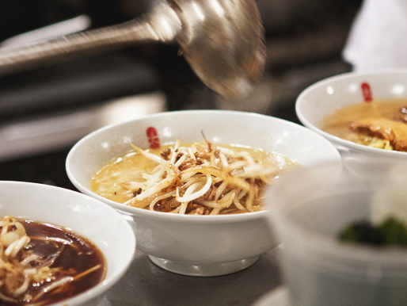

Sapporo Style

Sapporo ramen comes from Japan's northernmost province of Hokkaido, the birthplace of miso ramen. Though its history as a ramen center hasn't yet hit 50 years, it's become one of the most widely influential styles. You'll find Sapporo-style miso ramen, with thick, robust noodles, all over Japan, from the ramenya of Tokyo down to the south in Kyushu. Sapporo ramen comes from Japan's northernmost province of Hokkaido, the birthplace of miso ramen. Though its history as a ramen center hasn't yet hit 50 years, it's become one of the most widely influential styles. You'll find Sapporo-style miso ramen, with thick, robust noodles, all over Japan, from the ramenya of Tokyo down to the south in Kyushu.